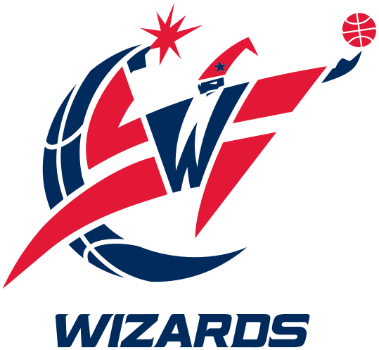
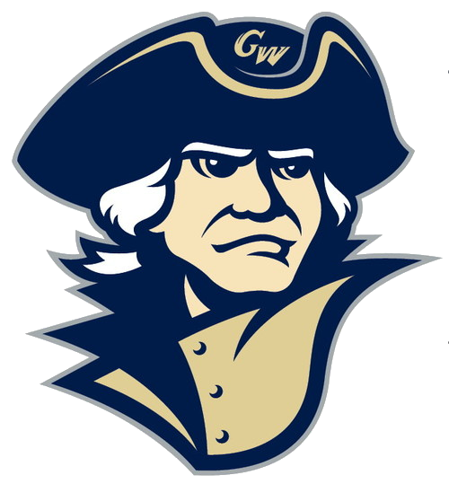

My Career So Far!
My career has so far spanned seven years of working in Events and Marketing in Sports and Non-Profit with a touch of consulting in all fields in the middle. Check out my more detailed history below!
| Dates | Job | Description | |
|---|---|---|---|
| September 2014 - December 2016 | Development Associate | I helped plan major fundraising galas, other smaller events, and fundraising under $500. | |
| August 2013 - August 2014 | Consultant | Daniel Gardner Consulting | I consuleted for a year whild trying to figure out the next steps. I worked with Northern Lights School to plan their Celebrity Golf Tournament. I worked DreamForce for ServiceSource. I QA tested 20/20 Eyes Direct‘s website. I also researched, wrote, and updated JMP‘s "Hot 100 Privately Held Software Companies report" |
| August 2012 - May 2013 | Manager of Promotions and Fan Experience |  |
I planned, coordinated, marketed, and executed all of USF‘s 91 Home sports games across the six ticketed sports: M and W Soccer, W Volleyball, M and W Basketball, and Baseball. |
| February 2012 - August 2012 | Marketing Assistant | |
I assisted in marketing strategies and executing various USF homegames. |
| August 2011 - December 2011 | Development Associate | I helped plan and execute the three major development events. | |
| June 2010 - January 2011 | Team Ops Intern | I planned events for Stanford and Virginia Tech and was Stanford‘s point of contact. | |
| June 2009 - December 2009 | Intern | I helped with a wide variety of office tasks and special projects. | |
| January 2008 - June 2008 | Basketball Ops Intern |  | I helped with a wide variety of office tasks and special projects including draft preparation materials. |
| June 2008 - May 2009 | Co-President |  | Co-President of GWU's student fan group. Secured exclusive benefits that had been lost before such as prime seating for members. |